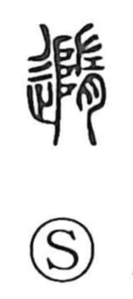

随

Uncategorized
Kun: shitagau, shitagaeru | On: zui
to follow ・ to accompany
Explanation
A phono-semantic character whose original form is 隨, with 隋 serving as the phonetic. In 隋, the left component 阜 (阝) depicts the stepped divine ladder by which the gods descend and ascend. On the right, 左 shows a hand grasping a ritual implement, and 月 is the abbreviated form of 肉, a meat offering. Together they portray presenting meat before the gods’ ladder while holding a ritual instrument, praying and divining for the deities’ whereabouts. From the act of going to where the gods are and moving in their train arose the senses “to accompany” and “to follow,” which 随 conveys.